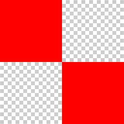
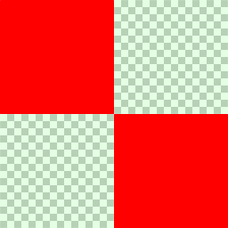

Consider a simple 2x2 texture consisting of two opaque red texels(1,0,0,1) and two transparent texels(0,0,0,0):
If we are going to magnify this 2x2 texture and map it to a larger area (say 128x128), we expect to see this (generated by Photoshop):
But when trying so with OpenGL (or WebGL which I'm using here), you'll get something strange instead:
There are some unwanted black fringes around the red blocks. What happens there?
In the rendering pipeline, a magnified texture is filtered in a quite straight-forward manner: simply performing a linear combination on the four neighboring texels' RGBA values, one channel at a time. For instance, in the middle between a red texel and a transparent one, the final color will be blended like this:
0.5*(1,0,0,1) + 0.5*(0,0,0,0) = (0.5,0,0,0.5)
Now we are clear where the black comes from—those transparent, invisible texels! Their colors matter. Blending a red color and transparent ought to produce a translucent 'proper red', like (1,0,0,0.5), but the pipeline gives a translucent 'dark red' (0.5,0,0,0.5). This is wrong.
And this "black fringing" artifact is very common in real time rendering. Here's one another:
Although some software implementations can do the filtering correctly, graphics cards generally just couldn't get it right. Fortunately, there are methods to address this problem without touching the graphics driver, among which the two most mainstream ones are:
Since the black comes from texels whose alpha is 0, we can simply modify the source texture and turn these texels' RGB to red, and the resulting RGB would be red anyway:
0.5*(1,0,0,1) + 0.5*(1,0,0,0) = (1,0,0,0.5)
Experiment with WebGL, it's working indeed:
This process is called "bleeding", i.e., spreading the RGB of the object's solid-color texels along the edge to nearby transparent ones, while maintaining their alpha 0. This can be done with some image processing software like Photoshop. Here's a real-world example:

The original icon areas are expanded by 1 texel, and these expanded texels are assigned corresponding RGB values. Here for illurstration purpose I make these texels visible, yet in reality they are fully transparent. If you are going to use the texture's mipmaps, make the bleeding range as large as possible. Otherwise a 1-texel border as the above example is sufficient.
Let's change the 2x2 texture a bit: make the two fully transparent pixels slight green (0,1,0,0.1), which is barely noticeable.
Unsurprisingly, the GPU gives us the familiar artifact:
Let's inspect the formula once again:
0.5*(1,0,0,1) + 0.5*(0,1,0,0.1) = (0.5,0.5,0,0.55)
The biggest problem here is the resulting green shares the same weight as the red channel, even if it comes from such a trivial source. It's intuitive to consider giving less weight of tinge to texels with smaller alpha. What if we multiply RGB by A, and represent the color with (RA,GA,BA,A) instead of (R,G,B,A)?
0.5*(1,0,0,1) + 0.5*(0,0.1,0,0.1) = (0.5,0.05,0,0.55)
Okay, now the green is significantly reduced, which is good. However, the red component seems incorrect—it should be 1 or something. Note the above representation is based on (RA,GA,BA,A), so we need to restore it to (R,G,B,A) by dividing RGB by A, which turns out to be (0.91,0.09,0,0.55). Seems right now.
This representation of (RA,GA,BA,A) is known as "premultiplied alpha", in contrast to the original "straight alpha", "unassociated alpha", "separate alpha", "unmultiplied alpha", "nonpremultiplied alpha"... whatever you call it.
To enter the premultiplied space, we need to alter the texels in PNG, or process them when reading them into memory. But how do we convert them back to straight (R,G,B,A) representation in the end?
In rendering pipeline, the final color of a pixel is to be blended with the one already in the framebuffer. The default blend function of OpenGL is (we only discuss RGB here):
d_RGB = (s_RGB * GL_SRC_ALPHA) + (d_RGB * GL_ONE_MINUS_SRC_ALPHA)
In premultiplied world, the color outputted from the fragment shader is (RA,GA,BA,A), which needs to be restored before blending:
d_RGB = (s_RGB / s_A * GL_SRC_ALPHA) + (d_RGB * GL_ONE_MINUS_SRC_ALPHA)
Which is:
d_RGB = (s_RGB * GL_ONE) + (d_RGB * GL_ONE_MINUS_SRC_ALPHA)
So, all we have to do is change the blend function to:
glBlendFunc(GL_ONE, GL_ONE_MINUS_SRC_ALPHA);
Let's do the experiment using WebGL again:
Perfect. Dark fringes disappeared.
Note that WebGL behaves differently from OpenGL in some aspects. For example, the canvas is composited over the HTML page assuming premultiplied alpha by default. Hence, in the demos above, I turn off the alpha channel writing mask for a clearer elaboration. See the code for details.
All in all, the premultiplied alpha approach involves two key operations:
- Premultiply texels in the texture file (or loading process)
- Change the rendering pipeline blend function